Operating Documentation
Direction 5670000, Rev# 1
Optima MR450w 1.5T Service Methods
Module Version 4.0, Version Date 5/28/09
Operating Documentation |
| NOTE: | This manual's vendor number is 15336. |
| ||||
| CRYOGEN GAS MAY BE GIVEN OFF IN THE MAGNET ROOM DURING FILLING AND RAMPING OF THE MAGNET, DISPLACING The OXYGEN IN THE ROOM. | ||||
| TO PREVENT ASPHYXIATION, THE OXYGEN MONITOR SUBSYSTEM MUST BE INSTALLED, CALIBRATED, AND OPERATIVE PRIOR TO MOVING THE MAGNET INTO THE MAGNET ROOM. |
This manual contains procedures on how to install, calibrate, and maintain the Oxygen Monitor subsystem.
The Oxygen Monitor subsystem monitors the oxygen level in environments where oxygen depletion can occur, such as an MR Magnet Room. The subsystem activates audible and visual alarms when oxygen levels drop below safe levels.
The major components in the Oxygen Monitor subsystem are shown in Illustration 1 and described below:
Control Unit: Contains most of the signal processing circuitry, the power supply, the meter, and audio and visual alarms. The Control Unit is typically mounted in the Operator Room near the Operator Console.
Remote Sensor Module: Includes an audio and visual alarm and an Oxygen Sensor Cell. The Remote Sensor Module is typically mounted in the Magnet Room.
Illustration 1: Major Components in Oxygen Monitor Subsystem
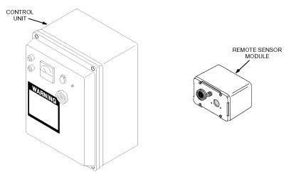
| NOTE: | Cellular phones can cause false alarms in the Oxygen Monitor subsystem. Keep all cellular phones at least 20 feet away from Oxygen Monitor subsystems even if the phone is not in use. |
Illustration 2 shows the Oxygen Monitor subsystem installation at a typical site.
Illustration 2: Typical Oxygen Monitor Subsystem Installation
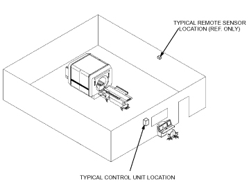
Section 2 - Theory, describes how the Oxygen Monitor subsystem works.
Section 3- Installation, contains step-by-step procedures for installing the Oxygen Monitor subsystem.
Section 4 - Calibration, contains step-by-step procedures for calibrating the Oxygen Monitor subsystem.
Section 5 - Replacement, contains step-by-step procedures for replacing Field Replaceable Units (FRUs) of the Oxygen Monitor subsystem.
Section 6 - Renewal Parts, contains parts lists identifying the parts and part numbers that are replaceable in the Oxygen Monitor subsystem.
The Oxygen Monitor subsystem senses the presence of oxygen with a galvanic micro-fuel cell. The cell produces an output current proportional to the partial pressure of oxygen in the surrounding atmosphere. The partial pressure corresponds to the percentage of oxygen by volume at normal atmospheric pressure. Circuitry within the Oxygen Monitor Control Unit converts the cell’s output current to a value representing the percentage of oxygen by volume and displays the percentage on a meter. The meter has a range of 16 to 26%.
Typically, air contains 20.9% oxygen by volume. Inert gas, such as helium or nitrogen, released within an enclosed environment can displace the air within the environment and reduce oxygen levels to the point where the environment becomes hazardous to human life. When the oxygen level drops below 18%, the Oxygen Monitor subsystem does the following:
Activates an audible alarm.
Illuminates a warning light.
Displays the percentage of oxygen by volume on a meter.
Activates an optional exhaust fan.
The Oxygen Monitor subsystem system consists of a:
Control Unit.
Remote Sensor Module.
The Control Unit contains:
Circuitry that processes signals from the Remote Sensor Module.
The power supply which supplies power for the Control Unit and the Remote Sensor Module.
Circuit breakers and fuses for electrically protecting the Oxygen Monitor subsystem.
Alarm LEDs and horn to indicate an alarm condition.
A meter that displays the oxygen level in percent by volume.
Relays to activate optional equipment, such as an exhaust fan, when the Oxygen Monitor subsystem enters an alarm condition.
The Control Unit receives a voltage from the Oxygen Sensor Cell in the Remote Sensor Module proportional to the percentage of oxygen by volume in the magnet room. Signal processing circuitry within the Control Unit amplifies this voltage and applies it to the meter. The gain potentiometer adjusts the amplification level to produce an accurate meter reading. Other circuits activate the alarm horn and LEDs or energize optional relays when the amplified voltage exceeds a preset threshold value. Potentiometers on the Main Circuit board set these thresholds. Refer to Section 4 for procedures to set and calibrate the thresholds.
External power is supplied to the entire Oxygen Monitor subsystem through the power supply within the Control Unit. Two circuit breakers and a slow-blow fuse protect the Oxygen Monitor subsystem.
Two relays are available in the Control Unit which can be used to automatically activate customer-provided equipment, such as an exhaust fan, when the Oxygen Monitor subsystem enters an alarm state. The relay contacts are dry, with a rating of 2 amps continuous, 5 amps surge, at 120 VAC. One of the relays is a latching relay, the other is a non-latching relay.
The latching relay is available at TB-7. Once triggered by an alarm condition, this relay remains latched (even when the alarm condition is no longer present) until it is released by pushing the RELAY RELEASE pushbutton switch on the Control Unit front panel. This relay is not fail-safe; the power-off position of the contacts is opposite from the latched (alarm) position. If power to the Control Unit is interrupted, this relay will not be energized. The contact positions for the power-off, non-alarm condition are shown in Table 1.
Table 1: Latching Relay Contacts (TB-7)
| Terminal Label | Contact Description |
| TB7-1NO | Normally Open |
| TB7-1NC | Normally Closed |
| TB7-1C | Common |
The non-latching relay is available at TB3. This is a fail-safe relay; the power-off position of the contacts is the same as the alarm position. This relay is only energized during an alarm condition or when power is interrupted. This is the relay that is normally used to activate a customer-provided exhaust fan (refer to Section 3.3). The contact positions for the power-off, alarm condition are shown in .
Table 2: Non-Latching Relay Contacts (TB-3)
| Terminal Label | Contact Description |
| TB3-1NO | Normally Open |
| TB3-1NC | Normally Closed |
| TB3-1C | Common |
The Remote Sensor Module measures the oxygen level in the magnet room, relays the measurement to the Control Unit, and warns occupants of the magnet room of a low oxygen condition. The Remote Sensor Module contains:
An alarm LED and horn.
Oxygen Sensor Cell (18-month/5-year)
The Remote Sensor Module receives power from the Control Unit to operate the alarm horn and LED. The Oxygen Sensor Cell produces the voltage indicating the oxygen level.
The Oxygen Sensor Cell is a galvanic micro-fuel cell. Oxygen in the gas space surrounding the cell diffuses through a Teflon membrane and is reduced on the surface of the cathode. A corresponding oxidation occurs at the anode which generates an electrical current proportional to the concentration of oxygen. Cell output is limited by the rate at which oxygen enters the cell and by the amount of anode material stored within the cell. The resulting cell output drives the meter circuit of the Oxygen Monitor Control Unit.
The shorting clip on the Oxygen Sensor Cell is removed immediately prior to installation. See Illustration 3. During storage, the shorting clip provides a current loop assuring that the sensor cell is ready for immediate use when placed into an Oxygen Monitor subsystem. If the shorting clip is prematurely removed, oxygen diffuses into the cell until the electrolyte is saturated. In this condition, it may be necessary to wait a considerable length of time before placing the cell into an operating situation. If the shorting clip is removed from a cell for some time, it will drive the meter off scale when it is installed in the Oxygen Monitor subsystem. This condition corrects itself in time, or the installer can remove the cell and place a shorting clip on the cell. For every hour the cell is un-shorted, about one hour is needed to re-stabilize the cell.
Illustration 3: Oxygen Sensor Cell

The Oxygen Sensor Cell (C-3) has the following characteristics:
Useful life of the cell depends upon the length of time it is exposed to oxygen and the magnitude of the oxygen concentration. In air, the cell will provide about 18 months of operation. If left in its Environmental Gas Barrier Bag, the cell shelf life is about 3 years.
Output at 25° C: 200 micro-amperes.
Operating temperature range: 32-131° F.
Minimum temperature: 26° F.
Position Sensitivity: Typically 2 to 5% of reading while mobile van is in transit, returning to calibrated specification after vehicular motion ceases.
The 5-year Oxygen Sensor (GEMS Part No. 2112207) consists of a sensor cell, a battery, and a PC board (with conversion circuitry contained in an RF-shielded enclosure). Incorporated with this new cell is an electronic circuit which duplicates the signal response of the original cell, thereby affording you a direct replacement component. (Aside: The incorporation of a battery was required since power is not available at the Remote Sensor Module in the magnet room.) Operating at less than 30 microamps, this Oxygen Sensor is optimized for a 5 year design life.
Output voltage in air, 7mV to 15mV at 21% O2.
Operating temperature range: 41-104° F.
Minimum temperature: 41° F.
| ||||
| The Oxygen Monitor Subsystem must be installed and functional prior to moving the magnet into the magnet room. | ||||
The Oxygen Monitor Kit (46-317271G1) contains the parts needed to assemble an Oxygen Monitor subsystem. See Illustration 4. The Oxygen Monitor Kit contains the following:
Control Unit (46-306515G2) (miscellaneous hardware (Ty-wraps and mounting screws) shipped inside Control Unit).
Remote Sensor Module (46-301672P2).
Sensor Kit (46-301672P3).
Cables (46-243775G707 and 46-317992G1).
Direction 15336, Oxygen Monitor Subsystem.
Illustration 4: Oxygen Monitor Subsystem Kit

| NOTE: | The procedures in this section are only applicable to the current Oxygen Monitor subsystem delivered with forward production systems. |
| ||||
| If drilling into RF shielding, holes for mounting screws must be small enough to insure that screws provide good electrical contact with conductive materials in RF shielding. | ||||
| ||||
| BURN HAZARD! IF THE Oxygen Sensor CELL IS LEAKING OR PUNCTURED FOR ANY REASON, PLACE THE CELL ASIDE AND WASH HANDS AND ANY OTHER PARTS OF BODY OR CLOTHING THAT MIGHT HAVE COME IN CONTACT WITH THE ELECTROLYTE LIQUID (KOH SOLUTION). USE LARGE QUANTITIES OF WATER; THE ELECTROLYTE IS A STRONG CAUSTIC SOLUTION AND CAN CAUSE SEVERE BURNS. | ||||
| ||||
| If electrolyte liquid or crystal growth are visible anywhere on the cell or within the barrier bag, the cell is leaking and should not be used. | ||||
Loosen the four screws securing the front cover of the Remote Sensor Module and lift off the front cover. Refer to Illustration 5.
Mount the Remote Sensor Module in the magnet room according to the site plan. Illustration 6 shows the typical installation.
| NOTE: | The Oxygen Monitor remote sensor will be provided by General
Electric. The center of the remote sensor is to be 60 inches from
the magnet room floor. The horizontal mounting position must be outside the 100 Gauss field.
All mounting hardware must be non-magnetic. |
Remove the Shorting Clip on the Oxygen Sensor Cell just prior to installation. See Illustration 3.
Remove the Oxygen Sensor Cell from the environmental gas barrier bag and remove the shorting clip. See Illustration 7.
Install the cell into the Sensor Circuit Board making sure the cell’s center pin is inserted into the center socket of the Sensor Circuit Board. See Illustration 8.
| NOTE: | New Remote Sensor Modules may include a Sensor Retrofit Plate, which is used with the new Oxygen Calibration Kit. If the Sensor Retrofit Plate is not included, ignore the references to the plate in the following note and step. To obtain the Sensor Retrofit Kit, order Part Number 46-301672P3. For installation instructions, refer to Section 3.4. |
| NOTE: | During installation of the Sensor Retrofit Plate, make sure the gasket side of the plate is installed against the sensor cell. Also, due to variations in sensor circuit board design, two sets of screws are provided in the kit. Be sure to use the appropriate length screws so that the sensor cell and circuit board are securely fastened to the sensor retrofit plate. |
Install the Oxygen Sensor Cell, Sensor Circuit Board, and Sensor Retrofit Plate on the front cover with the two screws provided.
Connect the Sensor Circuit Board green wire to terminal 4 in the Remote Sensor Module and connect the orange wire to terminal 5. See Illustration 9.
Connect the five wires from cable Run #458 to terminal 1 through 5 as shown in Illustration 9.
Secure the cable to the cable mount with one of the Ty-wraps provided in the Oxygen Monitor kit.
Install and secure the front cover of the Remote Sensor Module.
Illustration 5: Removing The Remote Sensor Module Cover

Illustration 6: Remote Sensor Module Typical Installation

Illustration 7: Unpacking The Oxygen Sensor Cell
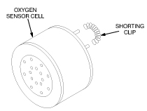
Illustration 8: Installing The Oxygen Sensor Cell

Illustration 9: Remote Sensor Module Wiring

| ||||
| ELECTRICAL SHOCK HAZARD! | ||||
| TO PREVENT POSSIBLE ELECTRIC SHOCK, LOCATE THE AUXILIARY POWER DISCONNECT SWITCH FOR THE OXYGEN MONITOR SUBSYSTEM, AND SET THE SWITCH IN THE OFF POSITION. | ||||
| TAG THE SWITCH, INDICATING SERVICE IS BEING PERFORMED AND NOT TO ENERGIZE UNTIL THE SIGNER ON THE TAG IS NOTIFIED OR THE TAG IS REMOVED. |
| ||||
| Input power circuitry and wiring must meet all applicable provisions of the national electrical code. Also, do not inadvertently interchange the neutral (white) and hot (black) wires at the terminal block. Serious degradation of the instrument performance can result from this error. | ||||
Loosen the four captive screws securing the front cover of the Control Unit and open the front cover. See Illustration 10.
Mount the Control Unit in the Operator Room according to the site plan. Illustration 10 shows a typical installation.
| NOTE: | The Oxygen Monitor Control Unit will be provided by General
Electric. The Oxygen Monitor Control Unit should be located near the Operator Console. Refer to the architect's layouts to determine the specific location. |
Set up the Control Unit transformer configuration for either 110 VAC or 220 VAC as shown in Illustration 11.
Turn off external power.
Connect wiring as shown in Illustration 12 and Illustration 13.
Secure cable Run #457 to the cable mount with one of the Ty-wraps provided in the Oxygen Monitor Subsystem kit.
Close and secure the front cover of the Control Unit.
Illustration 10: Control Unit Installation

Illustration 11: Transformer Configuration

Illustration 12: Control Unit Terminal Block Wiring

Illustration 13: Control Unit Wiring

Route cable Run #458 from the Remote Sensor Module to the Penetration Panel or Secondary Penetration Wall (SPW) and connect the cable to J17. See Illustration 14.
| NOTE: | Make sure the extra cable length from cable Run #458 is located away from the magnet to prevent it from causing MR image quality problems. |
Route cable Run #457 from the Control Unit to the Penetration Panel or SPW and connect the cable to J17. See Illustration 14.
Illustration 14: Connecting the Remote Sensor Module to the Control Unit
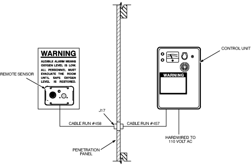
A relay-operated exhaust fan circuit can be added to the Oxygen Monitor subsystem as an option. To install the fan circuit, do the following:
Loosen the four captive screws securing the front cover of the Control Unit and open the front cover.
Connect the fan circuit to the Control Unit using one of the wiring configurations shown in Illustration 15 and Illustration 16. Refer to your specific site plan for specific wiring details.
Illustration 15: Simplified Fan Circuit Wiring (Normally Energized Fan Contactor)
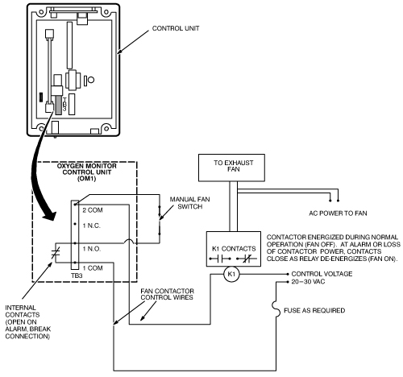
| NOTE: | All equipment outside of the control unit (dashed line) is to be supplied by the customer. |
Illustration 16: Simplified Fan Circuit Wiring (Normally De-Energized Fan Contactor)

| NOTE: | All equipment outside of the control unit (dashed line) is to be supplied by the customer. |
| NOTE: | For 5-Year Oxygen Sensors, if you do not have a Sensor Retrofit Plate, you need to obtain and install one. If you do not use a Sensor Retrofit Plate, the 5-Year Oxygen Sensor will not fit properly in the remote sensor module |
New Remote Sensor Modules may have sensors mounted so that an Oxygen Calibration Unit screw-in nozzle can be attached to the sensor during calibration of the Oxygen Monitor Subsystem. A Sensor Retrofit Kit (46-301672P3) is also available to retrofit older Remote Sensor Modules to allow attachment of the Oxygen Calibration Unit nozzle. To install the Sensor Retrofit Kit, do the following:
Remove the front cover of the Remote Sensor Module.
Remove the Oxygen Sensor Cell and Sensor Circuit Board from the front cover as shown in Illustration 17.
With a flat-tip screwdriver, remove the glue securing the porous metal disk to the back of the front cover, and remove the disk as shown in Illustration 18.
| NOTE: | During installation of the Sensor Retrofit Plate, make sure the gasket side of the plate is installed against the sensor cell. Also, due to variations in sensor circuit board design, two sets of screws are provided in the kit. Be sure to use the appropriate length screws so that the sensor cell and circuit board are securely fastened to the Sensor Retrofit Plate. |
Install the Oxygen Sensor Cell, Sensor Circuit Board, and Sensor Retrofit Plate on the front cover with the two screws provided in the kit. See Illustration 19.
Illustration 17: Removing the Oxygen Sensor Cell and Sensor Circuit Board
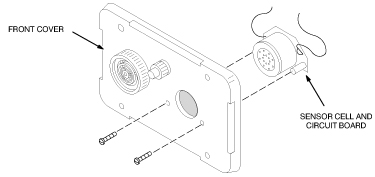
Illustration 18: Removing the Porous Metal Disk

Illustration 19: Installing the Sensor Retrofit Kit
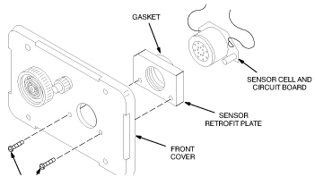
| NOTE: | There are two calibration procedures for the Oxygen Monitor subsystem. The aerosol gas calibration procedure (Section 4.1) and the oxygen tank/regulator procedure (Section 4.2). To use either procedure, a Sensor Retrofit Kit (46-320936P1) must be installed. See Illustration 20. If missing, order and install before continuing. |
This section contains the procedures for calibrating the Oxygen Monitor subsystem. This is one of two types of calibration that are performed on the Oxygen Monitor subsystem:
Gain adjustment. This adjustment is performed:
At initial installation of the Oxygen Monitor subsystem.
After replacing the Main Circuit board or Oxygen Sensor Cell.
After circuit alignment calibration.
According to your site’s periodic maintenance schedule.
Circuit alignment.The Oxygen Monitor subsystem is shipped pre-aligned but may require realignment if the alarm does not operate properly or when the 5-year cell is installed.
| NOTE: | This section describes the calibration procedures using the newer Aerosol Gas Calibration Kit (2173689). The Remote Sensor Module must contain a Sensor Retrofit Kit (46-320936P1). See Illustration 20. If missing, order and install before continuing. |
The tools required for calibrating the Oxygen Monitor are:
Oxygen Calibration Kit: GE P/N 2173689 (CAC-2554)
Aerosol Calibration Adapter: GE P/N 2173691 (CAC-2500)
Small screwdriver
Voltmeter (only used for circuit alignment)
This procedure has been updated to simplify the calibration process. The gas cylinder calibration kit (46-328021G1) has been replaced by Aerosol Gas Calibration Kit (2173689). This kit includes two aerosol containers, one filled with 20.9% oxygen, balance nitrogen, and one filled with 17.0% oxygen, balance nitrogen. These aerosol containers are constructed of aluminum and can be safely brought into the MRI room. For the purposes of calibration/test, the aerosol containers provide approximately 3 individual calibrations. After use, these cans can be discarded.
| NOTE: | Gas flowing time is limited to 30 - 45 seconds per can. These aerosol cans can be used for up to three calibrations if they are removed after a 15 second purge attachment. System test should be performed immediately after aerosol removal. It is important to mark the aerosol label where indicated after each test so that filled containers may be distinguished from empty or almost empty containers. For an extended one time use, the aerosol container may be left in place continuously until all gas has been exhausted. Continuous discharge offers the highest accuracy over the time gas is available in the aerosol container. |
| NOTE: | In order to conserve gas, it is necessary to trap a known volume of a gas mixture between the calibration adapter and the Oxygen Sensor. To properly accomplish this, an O-ring has been included with this kit which must be permanently installed in the Oxygen Sensor port. The O-ring should be placed by hand or with a needle nose pliers at the bottom of the threaded retrofit block firmly against the foam ring of the Oxygen Sensor. Refer to Illustration 20 for placement details. |
Turn on the power to the Control Unit. The green power LED should light.
Screw the Aerosol Gas Calibration Adapter (2173691) into the gas sensing port (which contains the retrofit block) located on the front cover of the Remote Sensor Module. See Illustration 20.
Using the aerosol can marked 20.9% Oxygen found in the Oxygen Calibration Kit, remove the cap and insert the top of the can with the nozzle inserted into the Aerosol Calibration Adapter. It will be necessary to snap the can onto the plastic fingers of the adapter by first attaching the can at an angle. Apply moderate force until the aerosol can snaps into place. When properly attached, you will be able to hear the gas automatically discharging. See Illustration 21 , Illustration 22, and Illustration 23.
| NOTE: | If a new Oxygen Sensor cell was installed, wait at least one hour for the sensor to stabilize, then readjust the oxygen gain until the meter reads 20.9%. |
Wait approximately 15 seconds (After 15 seconds, aerosol container may be removed for repeated tests or left in place for continuous gas discharge). Immediately adjust the O2 GAIN adjustment potentiometer on the Control Unit until the meter reads 20.9% oxygen (Illustration 24). Immediately remove the aerosol can by tilting the can at an angle until the container snaps free from the calibration adapter. Retain for possible repeated tests.
Using the aerosol can marked 17.0% Oxygen found in the Oxygen Calibration Kit, remove the cap and insert the top of the can with the nozzle directed into the Aerosol Calibration Adapter. It may be necessary to snap the can onto the plastic fingers of the adapter by first attaching the can at an angle. Apply moderate force until the aerosol can snaps into place. When properly attached, you will be able to hear the gas automatically discharging. See Illustration 21, Illustration 22, and Illustration 23.
With the 17% oxygen aerosol attached to the Remote Sensor Module, the following should occur after approximately 15 seconds. (See Illustration 24):
The meter reading on the Control Unit should decrease to less than 18%.
The audible alarm should sound on the Control Unit and Remote Sensor Module.
The red alarm LED should blink on the Control Unit and Remote Sensor Module.
Immediately disconnect the 17.0% aerosol container from the Remote Sensor Module (after approximately 15 seconds). Disconnect the Aerosol Calibration Adapter to allow the ambient air with normal oxygen content to contact the sensor. Retain the 17% aerosol container for possible repeated tests.
| NOTE: | Unscrewing the Aerosol Calibration Adapter from the Remote Sensor Module allows rapid diffusion of ambient oxygen to reach the sensor cell. Unscrew adaptor only if aerosol container is removed to prevent unnecessary gas waste. |
Press the Relay Release button on the front cover of the Control Unit. The following should occur:
The meter on the Control Unit should read approximately 20.9%.
The audible alarms should stop sounding.
The red alarm LEDs should stop blinking and stay off.
If the system responds correctly as per Steps 1 through 8, your calibration is complete. Otherwise, continue with Section 4.1.4, Circuit Alignment.
Illustration 20: Control Unit Meter and Gain Adjustment Potentiometer
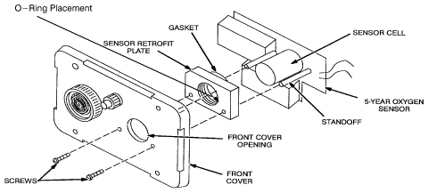
Illustration 21: Attaching Calibration Tool to the Oxygen Sensor Port

Illustration 22: Insert Oxygen Can Into the Calibration Tool

Illustration 23: Apply Moderate Force Until Can Snaps Into Place

Illustration 24: Control Unit Meter and Gain Adjustment Potentiometer
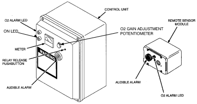
| ||||
| Because of the annoying and possibly alarming sound made by the Sonalert, it may be disabled during testing by disconnecting its red wire. Be sure to reconnect the wire after testing! Attaching a 10K resistor in series with the Sonalert permits audible alarm operation at a reduced volume. | ||||
The location of the Main Circuit Board and the test points and potentiometers used during the circuit alignment procedures are shown in Illustration 25.
Illustration 25: Test Point And Potentiometer Locations
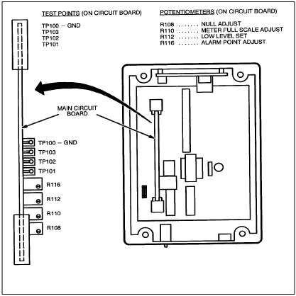
Null Adjustment
Null adjustment is not required when using the 5-year cell. Due to differences between this cell and the 18-month cell, it is only necessary to verify that the null adjustment is set fully counterclockwise.
Adjust the null potentiometer R108 fully clockwise (at least 10 turns) and then fully counterclockwise (at least 10 turns) or until a click is felt or heard indicating end of travel has been reached. This sweep adjustment is intended to clean the trim potentiometer wiper of contamination which might lead to an intermittent contact condition. See Illustration 26. During this verification, audible and visual alarm should activate. Press Relay Release button to restart system.
Illustration 26: Null Adjustment

Low Level Set Adjustment
Measure the voltage between the Oxygen Sensor circuit board lead wires. These leads are the two wires leading from the 5-year cell. Connection may also be made inside the ISA-40 Control Unit where the Oxygen Sensor cable enters the box. This is typically on the bottom across barrier strip connections 4 and 5. (Lead wires should be color coded Orange and Green. Connect your meter ground to the Green and meter positive to Orange. See Illustration 27.
The voltage should read between 0.030 and 0.060 VDC inclusive.
| NOTE: | If voltage across Oxygen Sensor lead wires is below 0.030 VDC (or until 20.9% oxygen can not be achieved with the O2 gain control tuned fully clockwise (CW)) , replace the Oxygen Sensor GE P/N 2112207. (Remember: Voltage readings for Oxygen Sensors must be made when sensor is attached to ISA-40 oxygen monitor circuit, otherwise, for an isolated 5-year cell, a 2.2 K resistor must be first connected across sensor leads. Voltage measurement can now be made across leads.) |
Connect the negative lead of the voltmeter to test point TP101 and the positive lead to test point TP103 on the Control Unit main circuit board. See Illustration 28.
Adjust Low Level Set potentiometer R112 until the voltmeter reads 1.03 VDC.
Illustration 27: Alarm Adjustment
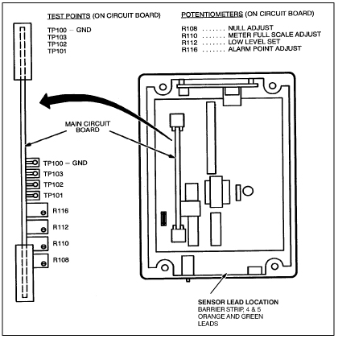
Illustration 28: Low Level Set Adjustment
Meter Full Scale Adjustment
Connect the negative lead of the voltmeter to test point TP101 and the positive lead to test point TP102 on the Control Unit main circuit board. See Illustration 29.
Adjust the O2 GAIN adjustment potentiometer on the front cover of the Control Unit until the voltmeter reads 1.55 VDC. See Illustration 30. If 1.55 VDC is not attainable, set adjustment @ full CW position.
Adjust the Meter Full Scale Adjustment potentiometer R110 until the meter on the front cover of the Control Unit reads full scale (26%). Counterclockwise increases the meter reading, Clockwise decreases the meter reading. See Illustration 29.
Remove the voltmeter from the test points.
Illustration 29: Meter Full Scale Adjustment
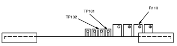
Illustration 30: Control Unit Meter and Gain Adjustment Potentiometer
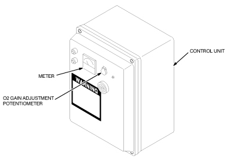
Alarm Set Adjustment
Adjust the O2 GAIN adjustment potentiometer on the front cover of the Control Unit until the meter reads 18.0%. If the red alarm LEDs on the Control Unit and Remote Sensor Module start blinking before the meter reads 18.0%, the Alarm Set Point is set too high. To lower the set point:
Rotate the Alarm Point Adjust potentiometer R116 clockwise a few turns, see Illustration 31.
Press the Relay Release button on the front cover of the Control Unit. The LEDs should remain off. Repeat Steps a and b if the LEDs continue to blink.
Rotate the Alarm potentiometer R116 counterclockwise until the Control Unit Alarm begins to activate. The following should occur:
The audible alarm should sound on the Control Unit and Remote Sensor Module.
The red alarm LEDs should blink on the Control Unit and Remote Sensor Module.
Adjust the O2 GAIN adjustment potentiometer on the front cover until the meter reads greater than 18.0% and press the Relay Release button. The alarm LEDs should stop blinking and remain off.
Adjust the O2 GAIN adjustment potentiometer until the alarm LEDs blink. If the LEDs do not start blinking when the meter reads 18.0%, repeat Steps 2 through 4. Otherwise, continue with Step 5.
Adjust the O2 GAIN adjustment potentiometer until the meter reads 20.9%, then push the Relay Reset button. Verify 20.9% reading using aerosol adapter and calibration aerosol gas per Section 4.1.3. Adjust O2 GAIN if necessary.
Reattach the aerosol adapter to the Oxygen Sensor port and attach the 17% oxygen aerosol to the Remote Sensor Module. Wait at least 15 seconds. The following should occur:
The meter reading on the Control Unit should decrease to less than 18%.
The audible alarms should sound on the Control Unit and Remote Sensor Module.
The red alarm LEDs should blink on the Control Unit and Remote Sensor Module.
| NOTE: | If the low oxygen alarm does not activate properly, replace the 5-Year Oxygen Sensor cell assembly, GE P/N 2112207, then obtain another 2173689 calibration kit and repeat Section 4.1.3. |
Remove the aerosol container and the aerosol adapter. Wait approximately 30 seconds for ambient air to diffuse into oxygen sensing port. Press the Relay Release button.
The following should occur:
The meter on the Control Unit should read approximately 20.9%.
The audible alarms should stop sounding.
The red alarm LEDs should stop blinking and stay off.
Reconnect the red wire to the Sonalert, if previously disconnected. Calibration and circuit alignment is now complete.
Illustration 31: Alarm Adjustment
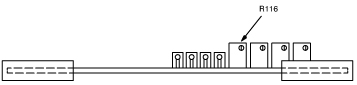
| ||||
| FAILURE TO RECONNECT THE SENSOR CELL SONALERT OR FAILURE TO DISCONNECT A SERIES RESISTOR WILL DEFEAT THE PURPOSE OF THE OXYGEN MONITOR AND MAY RESULT IN PEOPLE BEING ASPHYXIATED. | ||||
This section contains the procedures for calibrating the Oxygen Monitor subsystem. This is one of two types of calibration that are performed on the Oxygen Monitor subsystem.
Gain adjustment. This adjustment is performed:
At initial installation of the Oxygen Monitor subsystem.
After replacing the Main Circuit board or Oxygen Sensor Cell.
After circuit alignment calibration.
According to your site’s periodic maintenance schedule.
Circuit alignment.The Oxygen Monitor subsystem is shipped pre-aligned but may require realignment if the alarm does not operate properly.
| NOTE: | This section describes the calibration procedures using the newer Oxygen Calibration Kit (46-328021G1), and it assumes that the Sensor Retrofit Kit (46-320936P1) has been installed on the Remote Sensor Module. Make adjustments to the procedure as necessary, if the equipment conditions are different than documented in this section. |
The tools required for calibrating the Oxygen Monitor are:
Oxygen Calibration Kit (46–317271G1).
Small screwdriver.
Voltmeter (only used for circuit alignment).
Turn on the power to the Control Unit. The green power LED should light.
Screw the hose barb from the Oxygen Calibration Kit onto the front cover of the Remote Sensor Module. See Illustration 32.
Connect one end of the hose from the calibration kit to the 20.9% regulator hose barb. Leave the other end of the hose unattached at this time, so that the hose can be purged when the gas is turned on.
With the 20.9% regulator pressure adjust valve closed (turned completely counterclockwise) and the regulator toggle valve closed, open the 20.9% gas cylinder valve. The inlet pressure gauge will show the cylinder pressure.
| NOTE: | Adjust the valves slowly and only use low pressures. Adjusting the valves too fast or adjusting to excessive pressures may damage the sensor cell. |
Open the 20.9% regulator toggle valve and slowly adjust the regulator pressure adjust valve for an outlet pressure of one or two PSIG as indicated on the outlet pressure gauge.
Connect the other end of the hose to the hose barb on the Remote Sensor Module.
Adjust the O2 GAIN adjustment potentiometer on the Control Unit until the meter reads 20.9% oxygen. See Illustration 33.
| NOTE: | If a new Oxygen Sensor cell was installed, close the 20.9% gas cylinder valve and wait at least four hours for the sensor to stabilize, then readjust the O2 gain until the meter reads 20.9%. |
Shut off the 20.9% regulator and gas cylinder valves and remove the hose from the 20.9% regulator hose barb and also from the hose barb on the Remote Sensor Module.
Connect one end of the hose to the 17.0% regulator hose barb. Leave the other end of the hose unattached at this time, so that the hose can be purged when the gas is turned on.
With the 17.0% regulator pressure adjust valve closed (turned completely counterclockwise) and the regulator toggle valve closed, open the 17.0% gas cylinder valve. The inlet pressure gauge will show the cylinder pressure.
Open the 17.0% regulator toggle valve and slowly adjust the regulator pressure adjust valve for an outlet pressure of one or two PSIG as indicated on the outlet pressure gauge.
Connect the other end of the hose to the hose barb on the Remote Sensor Module. The following should occur (see Illustration 34):
The meter reading on the Control Unit should decrease to less than 18%.
The audible alarm should sound on the Control Unit and the Remote Sensor Module.
The red alarm LED should blink on the Control Unit and the Remote Sensor Module.
Shut off the 17.0% regulator and cylinder valves and remove the hose from the hose barb on the Remote Sensor Module to allow the ambient air with normal oxygen content to contact the sensor.
Press the Relay Release button on the front cover of the Control Unit. The following should occur:
The meter on the Control Unit should read approximately 20.9%.
The audible alarms should stop sounding.
The red alarm LEDs should stop blinking and stay off.
Illustration 32: Oxygen Calibration Kit
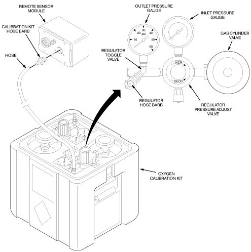
Illustration 33: Control Unit Meter And Gain Adjustment Potentiometer
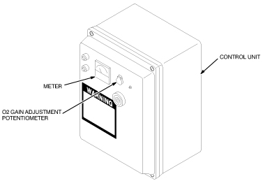
Illustration 34: Oxygen Monitor Subsystem Alarms and Relay Release Button

| NOTE: | Because of the annoying and possibly alarming sound made by the Sonalert during testing, disconnect the red wire to the Sonalert during testing and reconnect the wire after testing. |
| NOTE: | The location of the Main Circuit Board and the test points and potentiometers used during the circuit alignment procedures are shown in Illustration 35. |
Illustration 35: Test Point And Potentiometer Locations

Null Adjustment
Disconnect one of the Oxygen Sensor circuit board wires from its terminal in the Remote Sensor Module.
Connect the negative lead of the voltmeter to test point TP101 and the positive lead to test point TP102 on the Control Unit main circuit board. See Illustration 36.
Adjust Null Adjustment potentiometer R108 until the voltmeter reads 0.00 VDC.
Reconnect the Oxygen Sensor circuit board wire to its terminal in the Remote Sensor Module.
Illustration 36: Null Adjustment
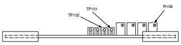
Low Level Set Adjustment
Measure the voltage between the Oxygen Sensor circuit board lead wires. The voltage should read between 0.04 and 0.06 VDC
Connect the negative lead of the voltmeter to test point TP101 and the positive lead to test point TP103 on the Control Unit main circuit board. See Illustration 37.
Adjust Low Level Set potentiometer R112 until the voltmeter reads 1.03 VDC.
Illustration 37: Low Level Set Adjustment
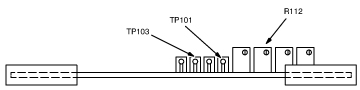
Meter Full Scale Adjustment
Connect the negative lead of the voltmeter to test point TP101 and the positive lead to test point TP102 on the Control Unit main circuit board.
Adjust the O2 GAIN adjustment potentiometer on the front cover of the Control Unit until the voltmeter reads 1.55 VDC. See Illustration 33.
Adjust the Meter Full Scale Adjustment potentiometer R110 until the meter on the front cover of the Control Unit reads full scale (26%). Clockwise increases the meter reading, counterclockwise decreases the meter reading. See Illustration 38.
Remove the voltmeter from the test points.
Illustration 38: Meter Full Scale Adjustment
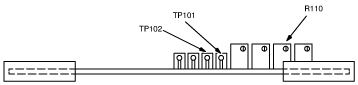
Alarm Set Adjustment
Adjust the potentiometer on the front cover of the Control Unit until the meter reads 18.0%. If the red alarm LEDs on the Control Unit and Remote Sensor Module start blinking before the meter reads 18.0%, the Alarm Set Point is set too high. To lower the set point:
Rotate the Alarm Point Adjust potentiometer R116 clockwise a few turns. See Illustration 39.
Press the Relay Release button on the front cover of the Control Unit. The LEDs should remain off. Repeat Steps a and b if the LEDs continue to blink.
Rotate the Alarm Point Adjust potentiometer R116 counterclockwise until the Control Unit Alarm begins to activate. The following should occur:
The audible alarm should sound on the Control Unit and Remote Sensor Module.
The red alarm LEDs should blink on the Control Unit and Remote Sensor Module.
Adjust the O2 GAIN adjustment potentiometer until the meter reads greater than 18.0% and press the Relay Release button. The alarm LEDs should stop blinking and remain off.
Adjust the O2 GAIN adjustment potentiometer until the alarm LEDs blink. If the LEDs do not start blinking when the meter reads 18.0%, repeat Steps 2 through 4. Otherwise, continue with Step 5.
Adjust the O2 GAIN adjustment potentiometer until the meter reads 20.9%, then push the Relay Reset button.
Screw the hose barb from the Oxygen Calibration Kit onto the front cover of the Remote Sensor Module. See Illustration 32.
Connect one end of the hose to the 17.0% regulator hose barb. Leave the other end of the hose unattached at this time, so that the hose can be purged when the gas is turned on.
With the 17.0% regulator pressure adjust valve closed (turned completely counterclockwise) and the regulator toggle valve closed, open the 17.0% gas cylinder valve. The inlet pressure gauge will show the cylinder pressure.
| NOTE: | Open the valves slowly and only use low pressures. Opening the valve too fast or adjusting to excessive pressures may damage the sensor cell. |
Open the 17.0% regulator toggle valve and slowly adjust the regulator pressure adjust valve for an outlet pressure of one or two PSIG as indicated on the outlet pressure gauge.
Connect the other end of the hose to the hose barb on the Remote Sensor Module. The following should occur:
The meter reading on the Control Unit should decrease to less than 18%.
The audible alarms should sound on the Control Unit and Remote Sensor Module.
The red alarm LEDs should blink on the Control Unit and Remote Sensor Module.
If the low oxygen alarm does not activate properly, repeat Section 4. If the Oxygen Monitor system does not operate properly after readjustment, replace the Oxygen Sensor cell and circuit board refer to Section 5 for replacement procedures. Then repeat Section 4.
Press the Relay Release button.
Reconnect the red wire to the Sonalert, if previously disconnected.
Illustration 39: Alarm Set Adjustment
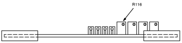
| ||||
| FAILURE TO RECONNECT THE SENSOR CELL SONALERT WILL DEFEAT THE PURPOSE OF THE OXYGEN MONITOR AND MAY RESULT IN PEOPLE BEING ASPHYXIATED. | ||||
The Control Unit contains a 50 mA slow blow fuse. If all LEDs are off with external power being supplied to the Control Unit, the fuse may have blown.
Before replacing the fuse, do the following:
Press the circuit breaker reset buttons on the bottom of the Control Unit to verify that the circuit breakers are not tripped.
If the Control Unit power LED does not come on, turn off external power to the Control Unit.
Open the front cover on the Control Unit and remove the fuse. See Illustration 40.
| NOTE: | Fuse replacement requires exact replacement with the same type of fuse. Any other type of fuse may result in damage to the Control Unit. |
Verify that the fuse no longer has continuity. Replace the fuse if it does not have electrical continuity.
Illustration 40: Fuse And Circuit Breaker Locations
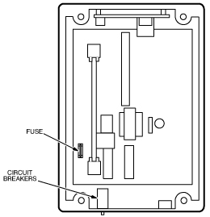
The Control Unit contains a green power LED and red alarm LED. The Remote Sensor Module has a red alarm LED. To replace the LEDs:
Turn off the external power to the Control Unit.
Unscrew the LED base cap and pull out the LED as shown in Illustration 41.
Align the offset pins of the new LED with the holes in the base on the Remote Sensor Module or Control Unit.
| NOTE: | If the LED does not fit into the base easily, do not force the LED into the base. The pin offset is very slight and the LED could be forced into the base with the incorrect polarity. The LED will not operate if it is installed with the incorrect polarity. |
Push in the new LED and screw on the LED base cap.
Turn on the external power.
Illustration 41: Removing LEDs
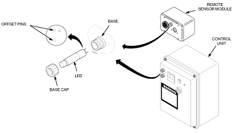
To replace the horn on the Control Unit or Remote Sensor Module:
Turn off external power to the Control Unit.
Loosen four captive screws to open the front cover on the Control Unit or remove the front cover of the Remote Sensor Module. See Illustration 42.
Disconnect the wires from the horn.
Unscrew the ring securing the horn to the front cover and remove the horn. See Illustration 43.
Insert the new horn and secure it to the front panel.
Reconnect the red wire to the positive horn terminal and the black wire to the negative horn terminal. See Illustration 42.
Reinstall the front cover and turn on the external power.
Illustration 42: Removing Horn Wires

Illustration 43: Removing Horn

To replace the Main Circuit Board:
Turn off external power to the Control Unit.
Loosen four captive screws securing the front cover of the Control Unit and open the front cover. See Illustration 44.
Lift the two levers on the top and bottom of the Main Circuit Board and pull the board out of the Control Unit.
Carefully slide the new Main Circuit Board into the circuit board slots in the Control Unit.
Close the front cover and turn on external power.
Perform the following calibration procedures:
Circuit Alignment for 5-Year or 18-Month oxygen sensor
Gain Adjustment and Alarm Functional Check for 5-Year or 18-Month oxygen sensor
Illustration 44: Removing The Main Circuit Board
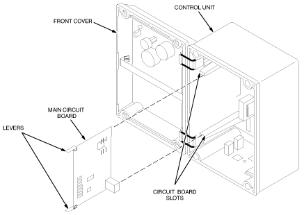
| ||||
| BURN HAZARD! IF THE Oxygen Sensor CELL IS LEAKING OR PUNCTURED FOR ANY REASON, PLACE THE CELL ASIDE AND WASH HANDS AND ANY OTHER PARTS OF BODY OR CLOTHING THAT MIGHT HAVE COME IN CONTACT WITH THE ELECTROLYTE LIQUID (KOH SOLUTION). USE LARGE QUANTITIES OF WATER; THE ELECTROLYTE IS A STRONG CAUSTIC SOLUTION AND CAN CAUSE SEVERE BURNS. | ||||
| ||||
| If electrolyte liquid or crystal growth are visible anywhere on the cell or within the barrier bag, the cell is leaking and should not be used. | ||||
To replace the Oxygen Sensor Cell:
Turn off external power to the Remote Sensor Module.
Loosen four captive screws and remove the front cover of the Remote Sensor Module. See Illustration 45.
Remove the two screws securing the Sensor Retrofit Plate, Oxygen Sensor Cell, and Sensor Circuit Board to the front cover.
Remove the Oxygen Sensor Cell from the Oxygen Sensor Circuit Board and discard the faulty cell per local regulations
Remove the new Oxygen Sensor Cell from the environmental gas barrier bag and remove the shorting clip. See Illustration 46.
Install the new cell into the Oxygen Sensor Circuit Board making sure the cell center pin is inserted into the center socket of the Oxygen Sensor circuit board. See Illustration 45.
| NOTE: | During installation of the Sensor Retrofit Plate, make sure the gasket side of the plate is installed against the sensor cell. |
Install and secure the Sensor Retrofit Plate, Oxygen Sensor Cell, and Sensor Circuit Board to the front cover of the Remote Sensor Module with two screws.
Install and secure the front cover of the Remote Sensor Module and turn on external power.
Perform procedure GAIN ADJUSTMENT AND ALARM FUNCTIONAL CHECK ( Step for 5-Year Oxygen Sensor or Step for 18-Month Oxygen Sensor).
Illustration 45: Removing The Oxygen Sensor Cell

Illustration 46: Unpacking The Oxygen Sensor Cell
Illustration 47: Oxygen Monitor Kit With Cables and Remote Sensor
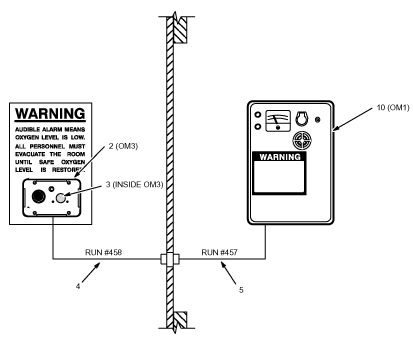
Table 3: Oxygen Monitor Kit with Cables and Remote Sensor
| Item | Part Number | FRU | Name | Qty | Description (Remarks) |
|---|---|---|---|---|---|
| 2 | 46-301672P2 | N | O2 MON PARTS | 1 | REMOTE SENSOR MODULE, OM3 (SEE Step .) |
| 3 | 46-301572P3 | 2 | O2 MON PARTS | 1 | SENSOR AND MOUNTING BOARD KIT (SEE Step .) |
| 4 | 46-243775G707 | 2 | CABLE | 1 | (458) PP-1J17 TO OM3 |
| 5 | 46-317992G1 | 2 | CABLE ASM | 1 | (457) PP-1J17 TO OM1-TB4 |
| 10 | 46-306515G2 | 2 | O2 MONITOR | 1 | OXYGEN MONITOR, OM1 WITH RATING PLATE ATTACHED TO ENMET'S MONITOR OF THE NO OXYGEN SENSOR OR HORN SWITCH CONFIGURATION. (SEE Step .) |
Illustration 48: Oxygen Monitor (OM1)
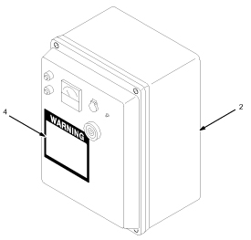
Table 4: Oxygen Monitor (OM1) 46-306515G1
| Item | Part No. | FRU | Name | Qty | Description (Remarks) |
|---|---|---|---|---|---|
| 2 | 46301672P1 | N | O2 MON PARTS | 1 | ENMET OXYGEN MONITOR (SEE ENMET OXYGEN MONITOR PARTS LIST BELOW) |
| 4 | 46301696P2 | 2 | LABEL | 1 | WARNING LABEL, ADHESIVE BACKED |
Table 5: ENMET Oxygen Monitor 46-301672P1
| Item | Part No. | FRU | Name | Qty | Description (Remarks) |
|---|---|---|---|---|---|
| 1 | 46-305001P1 | 2 | ENMET PART | 1 | 64002-050 SLOW-BLOW 0.05A FUSE |
| 2 | 46-305001P3 | 2 | ENMET PART | 1 | 04537-000 CIRCUIT ASM |
| 3 | 46-305001P5 | 2 | ENMET PART | 1 | 62034-001 RED LAMP |
| 4 | 46-305001P6 | 2 | ENMET PART | 1 | 62034-002 GREEN LAMP |
| 5 | 46-305001P7 | 2 | ENMET PART | 2 | 2034-000 LAMP BASE |
| 6 | 46-305001P4 | 2 | ENMET PART | 1 | 62013-002 SONALERT |
Illustration 49: Remote Oxygen Sensor Module (OM3)

Table 6: Remote Oxygen Sensor Module (OM3) (18-Month)
| Item | Part No. | FRU | Name | Qty | Description (Remarks) |
|---|---|---|---|---|---|
| 1 | 46-305001P4 | 2 | ENMET PART | 1 | 62013-002 SONALERT |
| 2 | 46-305001P5 | 2 | ENMET PART | 1 | 62034-001 RED LAMP |
| 3 | 46-305001P7 | 2 | ENMET PART | 1 | 62034-000 LAMP BASE |
Table 7: Sensor And Mounting Board Kit
| Item | Part No. | FRU | Name | Qty | Description (Remarks) |
|---|---|---|---|---|---|
| 1 | 46-305001P2 | 2 | ENMET PART | 1 | 67013-010 SENSOR CELL |
Illustration 50: Remote Oxygen Sensor Module (OM3)

Table 8: Remote Oxygen Sensor Module (OM3) 46-301672P3 (5-Year)
| Item | Part No. | FRU | Name | Qty | Description (Remarks) |
|---|---|---|---|---|---|
| 1 | 46-305001P4 | 2 | ENMET PART | 1 | 62013-002 SONALERT |
| 2 | 46-305001P5 | 2 | ENMET PART | 1 | 62034-001 RED LAMP |
| 3 | 46-305001P7 | 2 | ENMET PART | 1 | 62034-000 LAMP BASE |
Table 9: Sensor And Mounting Board Kit
| Item | Part No. | FRU | Name | Qty | Description (Remarks) |
|---|---|---|---|---|---|
| 1 | 46-320936P1 | 2 | ENMET PART | 1 | SENSOR RETROFIT KIT |
| 1 | 2112207 | 2 | CAC PART | 1 | 5-Year SENSOR CELL |
Table 10: Sensor And Mounting Board Kit
| Item | Part No. | FRU | Name | Qty | Description (Remarks) |
|---|---|---|---|---|---|
| 1 | 2173689 | 2 | CAC PART | 1 | CAC-2554 OXYGEN CAL. KIT |
| 1 | 2173691 | 2 | CAC PART | 1 | CAC-2500 AEROSOL CAL. ADAPTER |